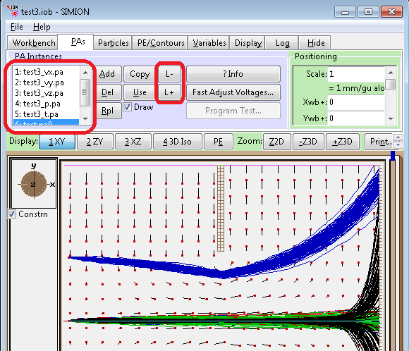

Introduction
This example demonstrates the SDS collision model, which can handle high (e.g. atmospheric) pressure much more efficiently and correctly than the HS1 collision model. Ths SDS model uses a combination of a viscous Stokes' law drag force and a superimposed diffusion effect. The drag effect approaches the mobility equation at terminal velocity and is tuned to the mobility constant, like in Example(drag). The diffusion effect is somewhat like in Example(HS1) but is usable at high pressures.
Running the Demo
The demo can be run using the following steps. If you are already running SIMION, make sure you have erased all potential arrays before loading the .IOB file for this demo.
- 1. Start SIMION.
- 2. Click the View button and select TEST.IOB.
- 3. Note SDS has defaulted the trajectory quality (T.Qual) to 0. That is recommended for SDS.
- 4. Uncheck the Record Data check box (Particles tab) to stop ion trajectory recording.
- 5. Check the Grouped check box (Particles tab) to fly all the ions in a group.
- 6. Check the Dots check box (Particles tab) to display all ions as dots.
- 7. Push the dot speed slider (under Dots in Particles tab) all the way to the right (fastest dot flying).
- 8. Click the Fly'm button.
- 9. View the data in the Log tab.
The ions will be flown as dots in groups. Notice how the ions diffuse and separate in groups. This is an example of the differences in mobility and diffusions rates for the different ions.
test2 - analytically defined flows
See also the test2.iob example and the corresponding user program (test2.lua) for an example of defining temperature, pressure, and velocity as functions defined analytically (rather than via Lua arrays).
test3 - storage of flows in SIMION PA's (SIMION 8.1)
In SIMION 8.1, gas flows can be stored inside regular SIMION PA files. For example, the pressure is stored in test_p.pa; the temperature is stored in test_t.pa; and the X, Y, and Z components of the gas flow vectors are stored in test_vx.pa, test_vy.pa, and test_vz.pa respectively. The SDS program will interpret the arrays based on the letters in the file name following the underscore (i.e. 'p', 't', 'vx', 'vy', and 'vz'). Using PA files for gas flow storage offers a number of conveniences because SIMION already knows how to deal with PA files. As PA files, you can add and position them on the workbench (PAs tab). You can use the PE and contour plotting functions on the View screen to plot them (as well as the contourlib81.lua field plotting library). SIMION handles the interpolation between grid points for you. You can examine the PA's in Modify and read/edit the PA's programatically using the Lua API for PAs. An example is given in "test3.iob/test3.lua". When loading this, be sure not to refine the gas flow arrays when prompted to because the Laplace equation should not be applied to the gas flows (and doing so will clear the gas flow data from the arrays). Note that in the PA Instances list on the PAs tab, the gas flow arrays must have lower priority numbers than any electrostatic and/or magnetic PAs because SIMION will read the values in the highest priority PA instances that particle is currentlyed located in to determine the electric and/or magnetic fields to apply to the particle, and you don't want the gas flow values to be interpreted as electric and/or magnetic fields. You can use the contourlib81.lua library to conveniently plat gas flows in SIMION 8.1, as shown in both the test3.iob and test2.iob examples. The gas flow arrays were created by running the "test3_prepare_arrays.lua" program (which has already been run for you, but you probably will want to look at this program as an example of what needs to be done to create your own arrays.).
You may convert an older style ASCII text file (e.g. 'p_defs.txt') to a SIMION PA
file by entering a command like this in the SIMION command bar:
simion.import'arraylib.lua'.text_to_pa_file('vx_defs.dat', 'tmp_vx.pa')
(assuming these files are in the current directory).

Figure: Screenshot of test3.iob, which uses gas flow PA's added to the workbench PA Instances list. Gas velocity vectors are also plotted.
Understanding the SDS Header Data Display
When the SDS user program initializes it outputs data to the Log Window on what it has found and what estimates it has made. If there is an error during the initialization process it will appear in this listing to help you find and fix it.
The first part of the listing that SIMION just created shows that SDS found that all the data field files were empty. Therefore no P, T, or bulk gas velocity fields are active.
The second part of the listing shows what ion mass based d and Ko data was found and/or created. Additionally, it shows the STP mean free path (MFPo) and STP average thermal velocity that SDS will use with all ions that match the mass of the definition line.
Notice that the M_DEFS.DAT file had two masses defined (130 and 190 amu). SDS will inform you of the values you defined and those it estimated. If a d or Ko value is defined a (def) will appear behind the value. If SDS has to estimate the value an (est) will appear behind the value. In the demo both the d and Ko values are defined in the file. Remember you have the option of defining one (SDS will estimate the other) or both.
Initializing user program arrays and parameters Checking P, T, and Vel arrays for data Note: No P, T, or V arrays active ------ Begin Next Fly'm ------ Mass Definitions loaded or created N , mass, dia, Ko Mobility ,MFPo, Avg Vo (n),(amu),(nm),(10-4 m2V-1s-1),(mm),(mm/usec) n=4, m=28, d=0.365652(est), Ko=3.07579(est), MFPo=6.27902e-005, Vo=0.454474 n=2, m=130, d=0.61(def), Ko=1.56(def), MFPo=2.49735e-005, Vo=0.210919 n=1, m=190, d=0.69(def), Ko=1.36(def), MFPo=1.88197e-005, Vo=0.174466 n=3, m=400, d=0.887228(est), Ko=0.973292(est), MFPo=9.96668e-006, Vo=0.120243 n=5, m=15000, d=2.9697(est), Ko=0.149391(est), MFPo=2.21738e-007, Vo=0.0196355 Added: No match found in MASSDEFS.DAT Local Values for ions at user defined: Pressure = 760 Torr Temperature = 298.15 K mass , K Mobility , MFP, Avg V ,B1 MFP/rB1=1 (amu),(10-4 m2V-1s-1),(mm),(mm/usec),(gauss) m=28, K=3.3573, MFP=6.85371e-005, v=0.474816, B1=2.01047e+007 m=130, K=1.70278, MFP=2.72592e-005, v=0.22036, B1=1.08919e+008 m=190, K=1.48447, MFP=2.05422e-005, v=0.182275, B1=1.74732e+008 m=400, K=1.06237, MFP=1.08789e-005, v=0.125625, B1=4.78728e+008 m=15000, K=0.163064, MFP=2.42033e-007, v=0.0205144, B1=1.3177e+011
When SDS encounters ions that don't match the masses already defined it automatically inserts the new mass and estimates both d and Ko from the ion's mass. In the demo, there are three masses that had to be inserted (28, 400, and 15,000 amu). Notice the values for d and Ko are estimated (est).
Also, SDS also looks at the volume wide pressure and temperature that the user specified (or defaulted to). It then computes a sorted table (by mass) of the ions it actually found and their local working temperature and pressure values for K (mobility), MFP (mean free path), V (average thermal speed), and B1.
B1 represents a significant magnetic field transition (see the magnetic demos). It is the magnetic field (in gauss) required to have the ion's thermal cyclotron radius equal its mean free path. Magnetic field strengths above B1 can cause SDS to overestimate molecular diffusion, because ion motions start to become a collection of significant circular arcs and/or circles.
Focusing Effects
The ions are flown through a three element lens. The initial voltages define a linear gradient (click the PE View tab to see the potential energy view). Let's change the voltages to add a bit of refraction:
- 1. Click the PAs tab.
- 2. Click the Fast Adjust Voltages button.
- 3. Change electrode 2 from 500 volts to 0 volts.
- 4. Click the Fast Adjust button.
- 5. Click the Fly'm button.
Notice that the ion clouds broaden out in y and compress in x. The potential energy view can be used to help you understand why the ions spread out as they do.
Another interesting feature is that the potential array is planar. Therefore, the ions really spread out in y due to refraction effects. However, their spread in z (looking from above) is just simple diffusion.
The example above made use of diverging acceleration. Now let's try converging acceleration. Use the steps above to change electrode 2 to 1,000 volts and fly the ions. Notice that the ion clouds are stretched out in x and compressed in y. If you look in from above the ion cloud motions in z looks like normal diffusion.
Bulk gas flow: The three bulk gas flow velocity variables (e.g. _Use_Vx_m_per_sec) provide an easy way to insert a global flow into the simulation. Use the converging acceleration example above (electrode 2 = 1,000 volts). Now when you get to the parameter initialization screen at the beginning of the fly'm, set the _Use_Vy_m_per_sec to 1.0e-1 m/sec and click fly. What you have done is to establish a vertical slug flow of 0.1 m/s upwards through your potential. The ion cloud flow patterns are really interesting.
Pressure Effects: Use the Bulk gas flow example above with the specified Vy velocity of 0.1 m/s. Now increase the pressure by an order of magnitude (7,600 Torr). Notice that no ion makes it through the middle lens element.
Now set the pressure to 76 Torr and fly the ions. Now all the ions get through the lens. However, the 15,000 amu ion takes a more roundabout route.
Temperature Effects: Try changing the global temperature. See how temperature changes the ion cloud trajectories. Does it make sense? Be suspicious!
Basic Steps to use SDS in your own Simulations
It is recommended you study the documentation and code thoroughly to ensure you are using it correctly. However, the following are the basic steps for using SDS in your own simulations:
- Copy SDS files into your project directory. These includes collision_sds.lua, textfilelib.lua, m_defs.dat, mbmr.dat, and possibly arraylib.lua.
- Add this to your workbench Lua program:
local SDS = simion.import("collision_sds.lua")Possibly add additional statements to configure SDS, like in the test.lua, test2.lua, and test3.lua examples. - collision_sds.lua defines the segments accel_adjust,
other_actions, initialize, tstep_adjust.
However, your own program might also need to define these segments.
If your segments are defined before calling
local SDS = simion.import("collision_sds.lua"), then SDS will merge the pre-existing segments you defined. If your segments are defined after, then your segents will overwrite the SDS segments, which is probably not what you want. Another way to avoid that is to do the following (which the test-sds-hs1.lua example uses extensively):function segment.other_actions() SDS.other_actions() -- add my code here end
- Edit mbmr.dat as needed for your ions. See SDS docs for other notes.
Complex Gas Flows
If gas flow is uniform/constant throughout space, you can define this
with just the adjustable variables (SDS_pressure_torr,
SDS_temperature_K, SDS_vx_m_per_sec,
SDS_vy_m_per_sec, and SDS_vz_m_per_sec).
If your flows can be approximately with analytic equations, you can merely add code like this to your workbench user program (see "test2.lua" for more examples):
-- example taken from "test2.lua"
local SDS = simion.import("collision_sds.lua")
function SDS.velocity(x,y,z) -- (m/s) vx,vy,vz in workbench coordinates
local vx = math.max(20-math.abs(y), 0)/5 * math.max(40-math.abs(x-50), 0)/40
local vy = 5*y/100 * (x > 50 and 1 or -1)
local vz = 0
return vx,vy,vz
end
If flows are defined numerically via arrays (e.g. computed from CFD software), you will need to instead use the basic steps below. The earlier way to do this (as described in the SDS documentation) was to load the data from text files read from the SDS program. A more direct way (available in SIMION 8.1 and demonstrated in "test3.iob/lua") is to store this data in regular PA files. For additional details, see Doc(CFD).
- Create your gas flow PA's for pressure, temperature, and/or the x, y, and z components of velocity by some method (see Doc(CFD)). The file names should be postfixed by "_vx.pa", "_vy.pa", "_vz.pa", "_p.pa", and "_t.pa" respectively to allow SDS to automatically recognize them. You can omit any or all of these arrays if they are zero or constant over all space (e.g. if you have no y component of velocity, you don't need to create a vy PA). These should have units m/s, Torr, and K , according to SDS model conventions. "test3d_prepare_arrays.lua" is an example of creating theses arrays from analytic formulas rather than CFD software, but the concept remains similar, and you can use that code as a basis.
- Add the PAs to the PA instances tab (attached sds.png) in your workbench. Be sure to properly position/scale each of them if need be. It is recommended to place the gas flow PAs at a lower priority number than any electrostatic PAs (using L-/L+ buttons). You can see this in the figure at top where the electrostatic PA (test.pa0) is given the highest priority number (6). If you don't make the electrostatic PA the highest priority number then particles likely won't see the correct electric fields (they will wrongly interpret the gas flows as electric fields).
- Set up a Lua workbench user program to load the SDS model (see above "Basic Steps to use SDS in your own Simulations" or examples like "examples\collision_sds\test3.lua". Note that if SDS sees any PAs attached to the workbench with the postfixes ("_vx.pa", "_vy.pa", "_vz.pa", "_p.pa", and "_t.pa"), it will automatically use them. You can see this in the Log window upon Fly'm, as seen in the attached picture.
- Optionally add some gas flow plots to the Lua program for visualization, like test3.lua does.
Gas Flow Velocity Anti-Mirroring
If your PA is mirrored in, say, the x direction, then it is likely that any gas flow velocity in the x direction requires not mirroring, f(-x)=f(x), but rather so-called anti-mirroring, f(-x)=-f(x). SIMION PA's don't yet support antimirroring directly (there are plans for it soon), but there is a way to simulate it if needed:
local vxinst = simion.wb.instances[1] -- x velocity PA instance
local vyinst = simion.wb.instances[2] -- y velocity PA instance
local vzinst = simion.wb.instances[3] -- z velocity PA instance
local vxpa = vxinst.pa
local vypa = vyinst.pa
local vzpa = vzinst.pa
function SDS.velocity(x,y,z)-- inputs workbench mm coordinates
x,y,z = inst:wb_to_pa_coords(x,y,z)
if xpa:inside_vc(x,y,z) then
local vx = xpa:potential_vc(x,y,z)
local vy = ypa:potential_vc(x,y,z)
local vz = zpa:potential_vc(x,y,z)
if x < 0 then vx = -vx end -- antimirror x
vx,vy,vz = inst:pa_to_wb_orient(vx,vy,vz)
return vx,vy,vz
end
end
Differences from the Dahl PRG Version
This is a summary of differences between this SIMION 8.0/8.1 Lua code and the SIMION 7 PRG code given by Dahl in the related paper.
- Code was converted from PRG to Lua.
- A default m_defs.dat was missing with the PRG version included in the paper.
- MBMR0.DAT - MBMR4.DAT files have been combined to one file (MBMR.DAT) for simplicity.
- PRG code had default limits for 4000 ions maximum, 200 mases, 1 million field points. Lua code has no limits (arrays grow as needed).
- The five field array files and m_defs.dat don't need to exist in the Lua version. They will simply be ignored if not present.
- Supports defining pressure, temperature, and velocity via analytical functions (rather than just arrays) in Lua code as well as (in SIMION 8.1) using regular PA files to store gas flow data (see test3.iob/lua).
- Many parts of the code have been restructured in a more Lua style.
- Log output is formatted slightly differently.
- PDFs and documentation were updated accordingly.
- Minor: In PRG code, in dmass calculation from kmass, comments indicating "1.0e-5 *" factor appear incorrect, though code is correct and is consistent with formula in PDF.
- Other than that, the Lua version should behave identically. With the random number generator identically seeded, trajectories of the PRG and Lua versions were identical under all conditions tested. (Identical seeding was done by calling seed(1) at program start and also ensuring a copy of initial.tbl exists as active.tbl in the FILES.GUI directory.)
Questions
How what is the lower limit of pressure in the SDS model? The 2005 paper by Appelhans/Dahl [1] did testing between 6-640 Torr. There were some later papers too noted in the references below. Others have also tested SDS, like in the Wuppertal ASMS2011 posters [8], which got good experimental and FEM validation of SDS results, though done at higher pressures. How well SDS holds on the low end or how low it can be reasonably taken, I (D.Manura) haven't personally studied, though obviously not as far (nor perhaps even nearly as far) down as free molecular, like the HS1 model handles. SDS assumes that the mobility and diffusion equations it uses hold, and these equations are described in the PDF with the SDS example. It would be good to add additional notes on intermediate pressures, and any input is appreciated. You may also be interested to know that Virtual Device Hydrodynamics (which is not based on SDS) is being specially designed to handle large differences in pressures, such as from atmospheric down to nearly free molecular (with plans to extend it down to free molecular), such as can occur in particular in ESI sources.
Can I disable SDS in certain regions? Just set pressure to zero in those regions. For example,
local SDS = simion.import 'collision_sds.lua' function SDS.pressure() if ion_px_mm < 50 then return 760 else return 0 end end
How can I use this in conjunction with CFD software? See CFD for details. The basic approach is demonstrated in "test3.iob/test3.lua" (described above), which queries gas flow state from a series of PA files attached and positioned on the workbench (PAs tab). These PA's store flow data and were initially generated from "test3_prepare_arrays.lua".
How can I plot gas flow? See CFD for details. The "test3.lua" (described above) demonstrates this using the contourlib81 library (from Example: contour).
Why set trajectory quality (T.Qual) to 0 not +3?
Near the end of the "Computational Methods" appendix of the SIMION printed
manual, there's some notes about what positive values of T.Qual do.
Normally, SIMION would try to make the particle advance one grid unit
(or a fraction of a grid unit) on each time-step.
However, under positive T.Qual, SIMION may dynamically reduce
time-step size at times when it finds the particles experience
certain conditions that would warrant higher accuracy.
Those tests assume vacuum conditions and know nothing about diffusion.
With diffusion effects, zero or negative T.Qual is suggested.
Note that there is also a SDS_min_time_step_usec variable in the
user program (discussed in collision_sds_documentation.pdf), which
can be used to set a lower-bound on time-step size (this is expressed
in time not distance).
SDS now has a segment.load which automatically defaults T.Qual to
0 upon IOB loading.
FAIMS
Example(faims) has an extension to the SDS model where the mobility constant can be a function of the magnitude of electric field, as can be typical at high RF fields seen in FAIMS instruments. This example also provides an option (SDS_faim_mode = 1) in which velocity is forced to be a direct function of the field by the mobility equation (v = k E) rather than indirectly achieving this via Stokes' law. That latter option may be more efficient but tends to only be suitable for higher pressures in which the "relaxation time" (approximate time for ion velocity to accelerate/decelerate to the terminal velocity defined by the mobility equation) is negligible.
See Also
- [1] Detailed documentation on the SDS model is in the accompanying PDF file.
- [2] [*] Anthony D. Appelhans and David A. Dahl. SIMION ion optics simulations at atmospheric pressure International Journal of Mass Spectrometry. Volume 244, Issue 1, 15 June 2005, Pages 1-14. [http://dx.doi.org/10.1016/j.ijms.2005.03.010] - The original paper that describes this SDS collision model.
- [3] [*] David A. Dahl, Timothy R. McJunkina and Jill R. Scott. "Comparison of ion trajectories in vacuum and viscous environments using SIMION: Insights for instrument design." International Journal of Mass Spectrometry Volume 266, Issues 1-3, 1 October 2007, Pages 156-165 [http://dx.doi.org/10.1016/j.ijms.2007.07.008] -- a later paper that further analyzes the SDS model.
- [4] [*] Hanh Lai, Timothy R. McJunkin, Carla J. Miller, Jill R. Scott, José R. Almirall. The predictive power of SIMION/SDS simulation software for modeling ion mobility spectrometry instruments. International Journal of Mass Spectrometry, 276 (2008) 1-8. http://dx.doi.org/10.1016/j.ijms.2008.06.011
- [5] [*] Jun Xu and William B. Whitten. Monte Carlo simulation of ion transport in ion mobility spectrometry. International Journal for Ion Mobility Spectrometry. April 10, 2008. [http://dx.doi.org/10.1007/s12127-008-0001-x] - Elastic collisions between ions and gas particles and conducted for an IMS drift tube. Typical IMS parameters, including pressure, temperature, and flow rate of the drift gas were taken into account in the simulations. (cites SDS)
- [6] US Patent 2008/0142697 A1. David A. Dahl, Jill R. Scott, Anthony D. Appelhans, Timothy R. McJunkin, John E. Olson. "Continuous Sampling Ion Mobility Spectrometers and Methods Therefor" - SDS is mentioned as being used in some of the modeling in this work
- [7] [*] Adrian Mariano, Wansheng Su, Samar Guharay. Effect of Space Charge on Resolving Power and Ion Loss in Ion Mobility Spectrometry. 2009, vol. 81, no 9, pp. 3385-3391. - repeatedly applies the SIMION 8.1 Poisson solver during the trajectory integration of an ion mobility system using SDS.
- [8]
Walter Wissdorf et al, University of Wuppertal, ASMS2011 TP04 series of posters ~ 067 - 070.
See ASMS2011 posters,
including TP04/070
-- does some further validation on the SDS model.
More recently, published:
- Wissdorf, Walter. Pohler, Larissa. Klee, Sonja. Müller, David. Benter, Thorsten. "Simulation of Ion Motion at Atmospheric Pressure: Particle Tracing Versus Electrokinetic Flow" Journal of The American Society for Mass Spectrometry. volume 23, issue 2, year 2011, pp. 397–406. doi:10.1007/s13361-011-0290-x.
- Example: HS1 Hard Sphere Collision Model hard-sphere collision model, which models each individual ion-gas collision (suitable only for lower pressures due to the computational intensity)
- Example: Drag, based simply on Stokes' Law.
- Example: collision_rs: SDS extended to support chemical reaction simulations.
- Example: FAIMS Model, extends the SDS model to handles FAIMS, where mobility can be a function of the electric field, and differences in mobility between high and low fields in RF cycles affect ion movement.
- Example: Misc contains an example of converting a gas flow in Fluent Interpolation (.ip) format into SIMION PA's, which can be used in SDS.
- Doc(mobility_equation)
Source
The code and documentation for this example are based on the original SDS model by Dave Dahl, 2004-09-27, included as SIMION PRG format in the supplementary material in the paper: Anthony D. Appelhans and David A. Dahl. SIMION ion optics simulations at atmospheric pressure International Journal of Mass Spectrometry. Volume 244, Issue 1, 15 June 2005, Pages 1-14. [2]. The SIMION PRG was converted to SIMION Lua by D.Manura, 2007-05, and incorporated into SIMION 8 by permission of Appelhans and Dahl. See the above "Differences" for changes made.
Changes
- 2013-02-22: collision_sds.lua .
Diffusion jump vector was not uniformly random. The direction (1,1,1) was about
five times more probable than directions normal to the X, Y, or Z axis.
In practice, this doesn't seem to make much difference in results after a few jumps
due to the central limit theorem, but the new implementation is technically more correct.
See the new
sphere_randfunction. Thanks for Adrian Mariano for pointing this out. The old version was basically this:-- old version < 8.1.1.30, slightly slower & missing repeat/until in original. local function sphere_rand(r) local xp,yp,zp,S -- repeat xp,yp,zp = rand()-0.5, rand()-0.5, rand()-0.5 S = xp*xp + yp*yp + zp*zp -- until S <= 0.25 and S ~= 0 -- rejection method local f = r/sqrt(S) local x,y,z = xp*f,yp*f,zp*f return x,y,z end - 2012-12-01: collision_sds.lua - Utilize
segment.initialize_runto simplify and improve robustness. - 2012-12-01: collision_sds.lua -
T.Qual now automatically defaults to 0 on IOB loading (via
segment.load). - 2012-09-04: libraries and files loaded by collision_sds.lua can now be searched relative to the directory containing that file. This avoids needing to copy all these files into your project directory.
- 2012-09-04: collision_sds.lua: always guard against negative local pressure and temperature.
- 2012-09-04: new versioning support (SDS._VERSION and version option for simion.import)
- 2011-12-08 collision_sds.lua - fix error in wrap_vector_field when vy or vz but not vx PA is defined.
- 2011-11-09 collision_sds.lua - Supports storage of gas flows in SIMION PA files (see test3.iob). test2.lua,test3.lua - Incorporates SIMION 8.1 'contourlib81' gas flow plotting. collision_sds.lua - disable SDS when pressure is zero (rather than raise error) collision_sds.lua - in reading array text files, avoid problems with Unix-style line endings and NaN values. collision_sds.lua - faster read_file_numbers collsion_sds.lua - extracted out arraylib.lua and textfilelib.lua into separate files.
- 2011-02-25 collision_sds.lua: If d_ion and ko both undefined, estimate both rather than raising error. The FAIMS version already did this. # Incorporate various changes from SDS-FAIMS model: Adjustable variable SDS_diffision can be used to disable diffusion. SDS.init variable, if set to a function, will execute that function on SDS initialization (inside initialized segment). Coordinates used to index pressure and temperature arrays can be configured via SDS.pressure_coordinates and SDS.temperature_coordinates. SDS is set as a global variable (to allow querying from command-bar) read_file_numbers detects number of columns.
- 2011-01-10 In collsion_sds.lua fixed "ion's x coord outside array" check (Issue I566).
- REV-5 2010-05-29 Fix handling velocity arrays with cylindrical symmetry (Issue I549)
- REV-4e 2008-05-08 simion.VERSION check corrected in check_array test3.lua - unload PAs from previous runs.
- REV-4d 2008-05-08 Added print_sds_parameters function.
- REV-4c 2008-04-26 More minor code quality improvements Fixed "point_weights[3] = sfx*fy*fz" -> "... sfx*fy*sfz". Error was introduced in conversion from PRG and only has a minor effect on 3D arrays. Support P/T/v arrays using real SIMION PAs (8.1 mode only). Add SDS.velocity_coords parameter.
- REV-4b significant restructuring major code structure/quality improvements (without affecting calculation) pressure/temperature/velocity can now be defined via an analytical function. allow SDS to be disabled on certain instances numbers (i) via SDS.instances[i] = false. Fixed wb_orient_to_pa_orient -> pa_orient_to_wb_orient (this mistake was introduced in the port from the PRG code. The error only existed when using velocity arrays on a PA that was rotated from the original WB coordinates.) Allow vz component in velocity array even in 2D planar arrays.
- REV-3 some code restructuring renamed adjustable variables (now with SDS_ prefix). new SDS_enable variable New install() function and options opt. remove skip if "ion_instance ~= 1" in other_actions.